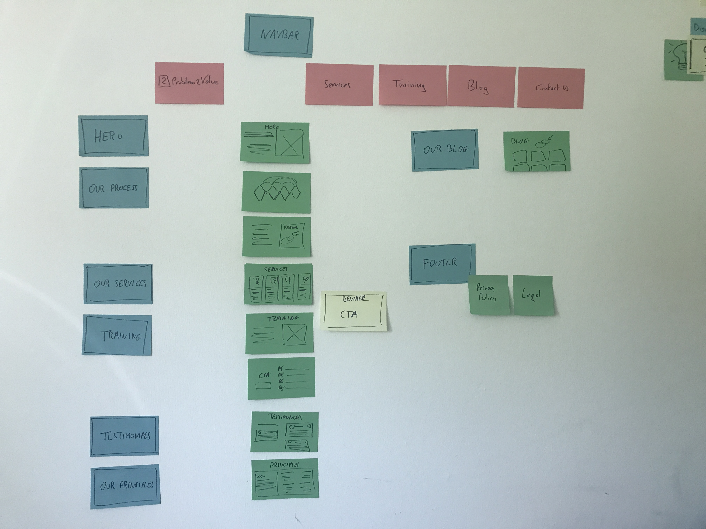
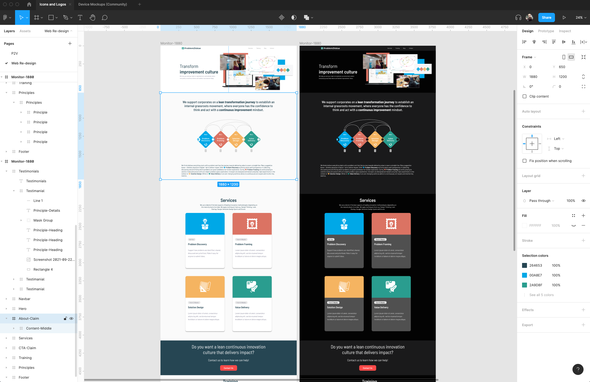
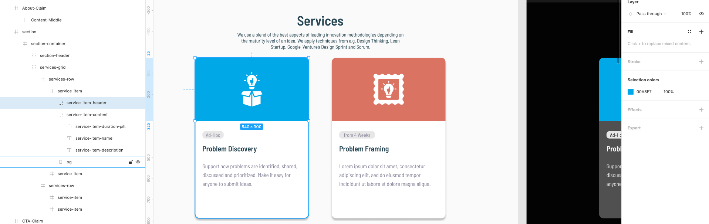
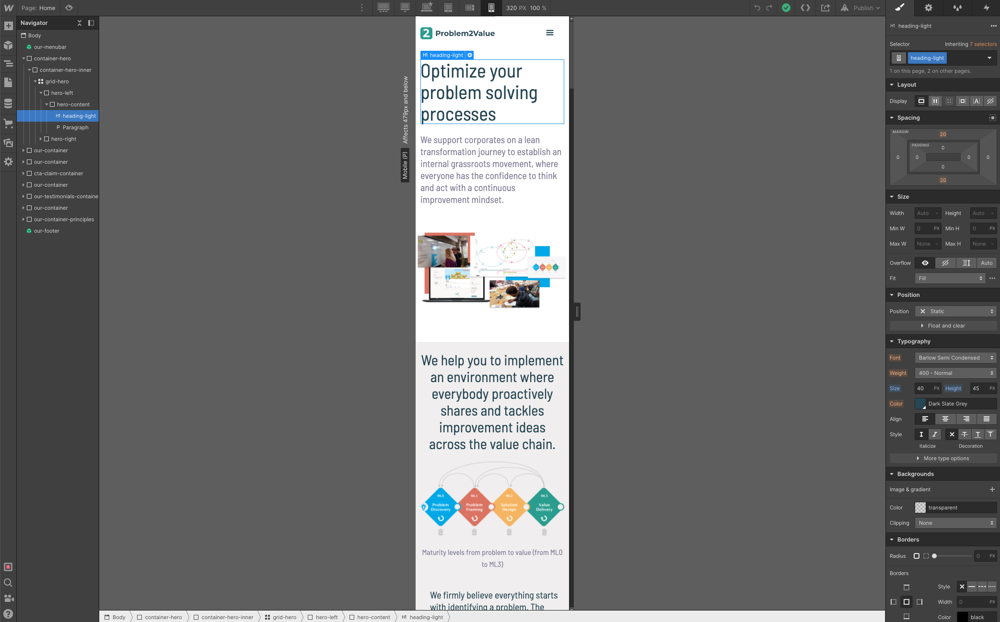
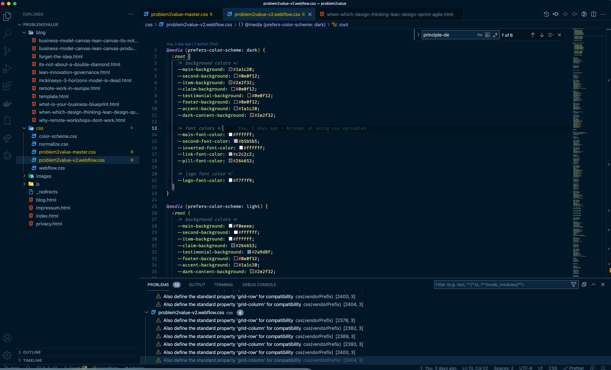
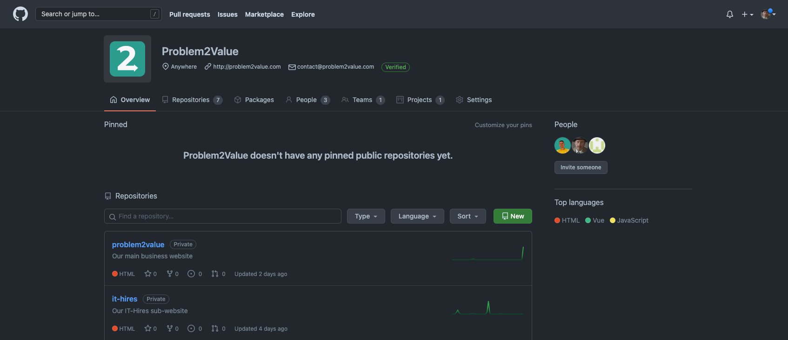
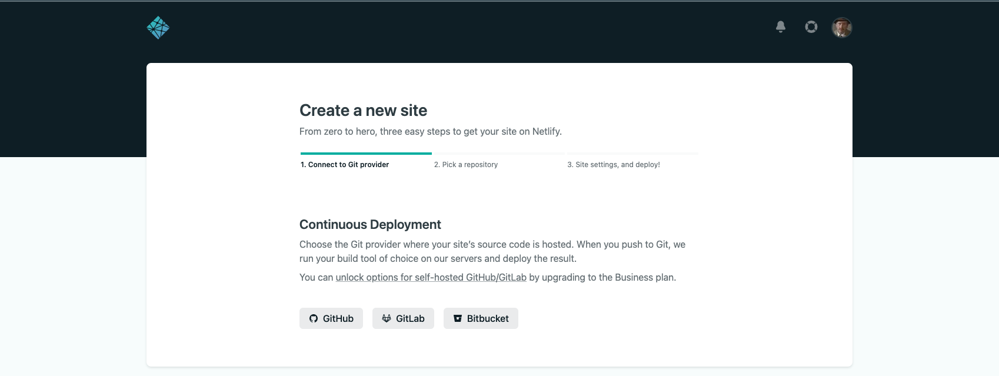
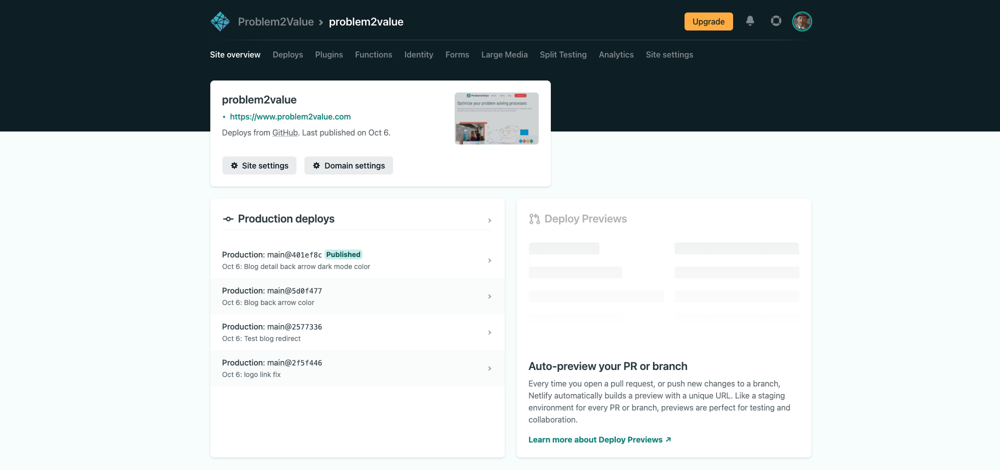
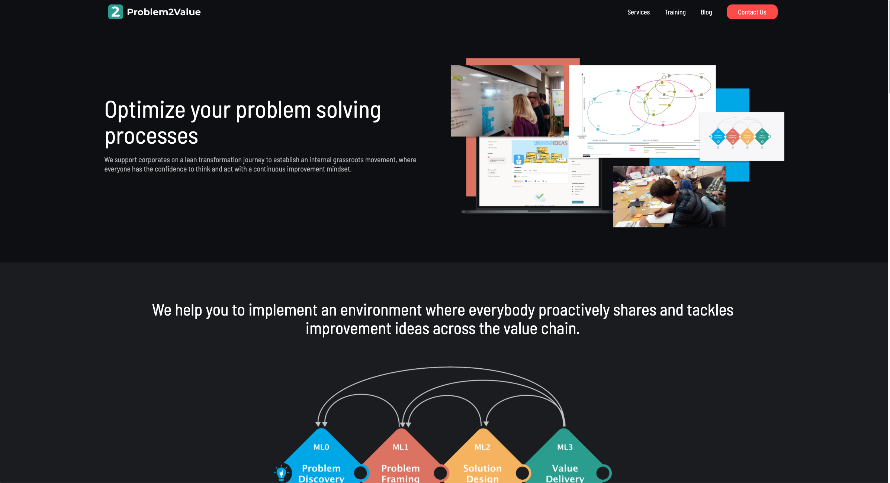
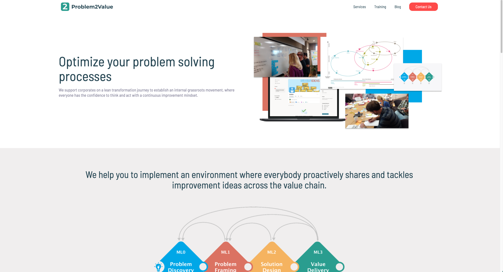

October 2021
From Sticky Notes to Live Website
Sticky Notes - Figma -Webflow - VS Code - GitHub - Netlify - Live
We recently re-designed and re-launched our own website. Everyone has of course different needs and skills and there are many different approaches ... we just thought we'd share how we did it.
Before we started Problem2Value just over a year ago we only had limited experience and knowledge on how to build a website. We realised however that most websites don't really need dynamic content or complex online shops. So we decided to use the pandemic lockdown time to learn how to do this ourselves.
Step 1: Sticky Notes
Starting with sticky notes is a great way to discuss and visualise the rough content and overall structure of a website. The idea is to write down and organise all content in separate sections to create an overall structure.
Almost all websites these days start with a "hero" section, which is the first thing attracting a visitor's attention.
Did you know that the term “hero” was first used in the world of theater and it was the prop that is more detailed than usual because it’s meant to be seen or viewed in close range? https://en.wikipedia.org/wiki/Theatrical_property#Hero_props
At the very top of each page is usually some sort of navigation. Other sections are a Call To Action or CTA section which are often some colorful divider used to separate other types of content sections. A consistent footer finally provides a way to clearly define the end of each page.

Concept on sticky notes
Step 2: Figma
The next step was to design what the website will look like. We tested a few tools and immediately really liked Figma. We now also use Figma to create graphics we use in our workshop slide-decks. At the moment we still use the free Figma "Starter" version.
There are some excellent free and affordable Figma learning materials and tutorials online.
uDemy tip: there are almost always offers, so don't pay full price!

Our website design in Figma
To get some inspiration we looked at a number of free templates as well some of our favourite websites. This gave us enough layout ideas for each of the website sections. We also started to think about and consider the HTML (DIV/Flex) boxes as well as which CSS style classes are needed.
With the growing popularity of "dark mode" we decided to design a light as well as dark mode version of our website in Figma.
We already have our own color scheme, but you can find plenty of free online tools like coolors.co to help you figure out which colors go well with others.
Our design in Figma focussed on the "standard", browser on a computer screen, screen size. In Figma you can also design for smaller screens like a tablet and mobile as well as very large screens, but we opted to do this directly in our website building tool.

Already thinking about HTML/CSS structure in Figma
Step 3: Webflow
There are many different ways to get a website online these days. Website builders such as Wix or Squarespace are really easy to use, but to host these sites on your own domain you will have to pay a monthly fee.
We wanted complete control over our design as well as keep the costs down. So, after evaluating a few tools we decided to learn how to build our own website using Webflow.
We went through Webflow's own free, and quite funny video tutorials. We also did the popular Flux Academy Webflow Masterclass flux-academy.com.
After having built a couple of websites now, we know that it is important to stick to a naming standard and keep the CSS class hierarchy clean. Also, having previously thought through the structure in Figma certainly helps speed up the actual building process.

Convert the Figma design in the Webflow website designer tool
As long as you keep the style classes clean we find Webflow's approach to design for smaller and bigger screens fairly straightforward. Starting from the "Desktop" view you can simply adjust margins, padding, font sizes etc as the screen size changes for smaller, i.e. Tablet and Mobile screens, as well as up to bigger, wide-screen monitors.
Our research showed that the majority reads websites on their mobile devices. Nearly nobody reads websites on tablets or mobile landscape (sideway) view so there is almost no point optimising for those screen sizes.

Adjust margins, padding, font sizes ect for smaller and bigger screens in Webflow
Since we want full control over our website we signed up for the WebFlow "Lite" Account plan, because it allows you to export the entire website code.
Step 4: VS Code
In some cases this step is optional. If you don't need to update code files and you have another way to simply push the website code to your GitHub repository.
We couldn't really find an easy way in Webflow to automatically switch the website design from light to dark mode. After some research we decided that using separate CSS variables for light and dark mode was the cleanest solution.
So to do this we needed a code editor and Visual Studio Code or VS Code is a great free code editor.
To automatically provide a light and dark mode we added a section on top of our exported Webflow CSS code file to check the user's preferred system setting. In there we also defined all different background and font colors for both the light and dark mode as CSS variables. In each CSS setting we then simply replaced the actual color value with the CSS variables, easy!
Example what we added to the CSS file:
@media (prefers-color-scheme: dark) {
:root {
/* background colors */
--main-background-color: #000000;
/* font colors */
--main-font-color: #ffffff;
}
}@media (prefers-color-scheme: light) {
:root {
/* background colors */
--main-background-color: #ffffff;
/* font colors */
--main-font-color: #000000;
}
}
.body {
background-color: var(--main-background-color);
color: var(--main-font-color);
}

Insert CSS variables to automatically offer a light and dark mode
Once we added the CSS variables we created a copy of the CSS file as our "master" CSS file to avoid having to replace the variables again and again, every time we export the website code.
Step 5: GitHub
When we started Problem2Value we created a Problem2Value organisation on GitHub where we can store and version control what we want.
Both websites we run have their own GitHub repository. Some basic git knowledge allows you to create branches and releases to easily switch between different versions.
Once we finished our updates in VS Code we pushed our Webflow website code to its GitHub Problem2Value website repository.

GitHub repository for each website
Step 6: Netlify
The final step was to configure Netlify and link it to our website's GitHub repository. Simply create a Netlify account and follow to steps to link it to the website code repository, adjust some DNS settings to point to your own domain name and that's it!

Link Netlify to the GitHub repository
It only takes seconds after each push to GitHub for Netlify to build and publish the new version of your website. Something we only recent learned is that Netlify can also build all branches of your repository, meaning you can test multiple versions at the same time!
Netlify is a cloud service that allows you to host static, serverless websites. The genius thing is that it integrates seamlessly with Github and will automatically build whenever it detects a change in the GitHub repository. To top it all of, for basic usage it is completely free!

Netlify Site Overview
Conclusion
So, after spending some time thinking about the content, moving around some sticky notes to establish the overall structure, then designing the website using Figma, followed by the actual built with Webflow and finally the whole GitHub/Netlify thing our new website is online ... job done!

Problem2Value.com in dark mode

Problem2Value.com in light mode